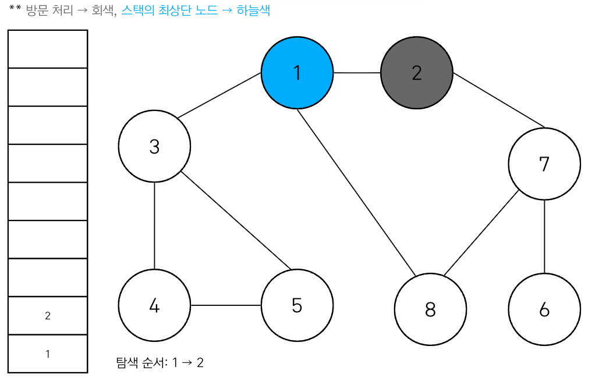
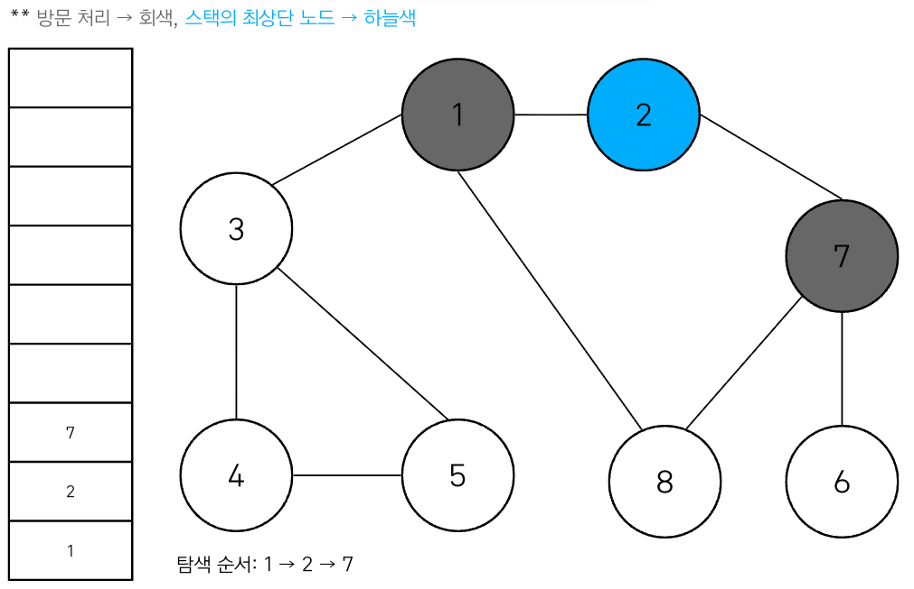
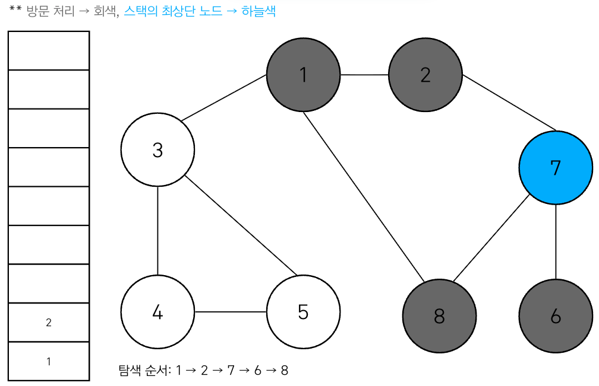
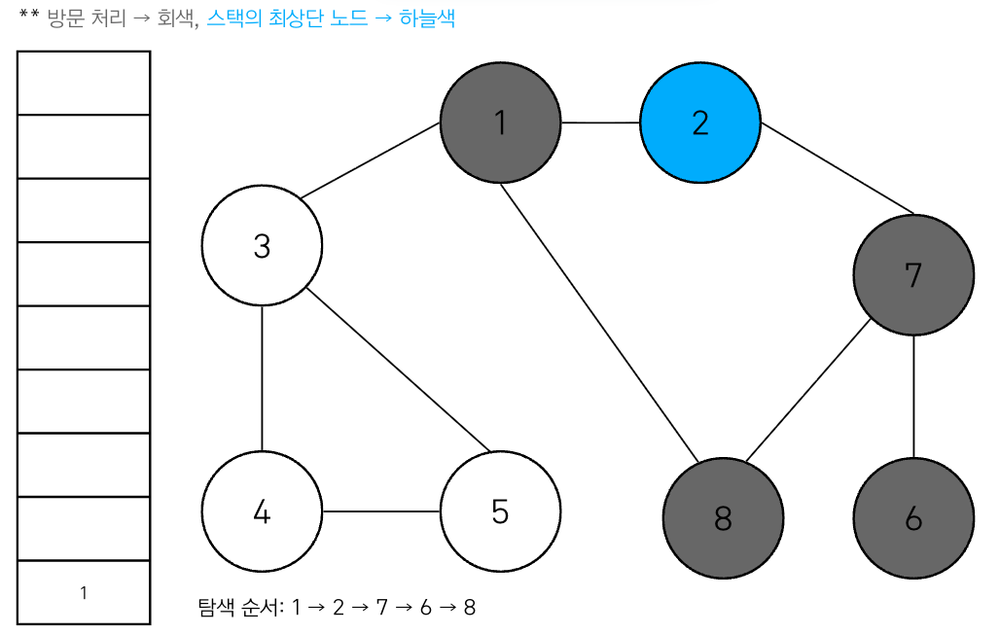
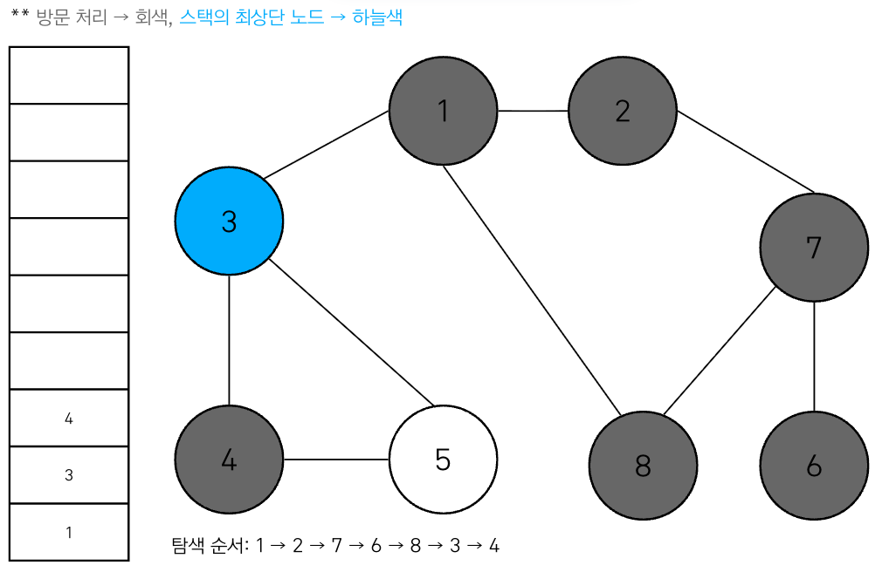

Lecture 2-1. DFS/BFS#
그래프를 탐색하기 위한 대표적인 두 가지 알고리즘인 DFS (Depth First Search)와 BFS (Breadth First Search)에 대해서 학습한다. 탐색 (Search)이란 많은 양의 데이터 중에서 원하는 데이터를 찾는 과정을 말한다. 이 개념을 위해서 사전적으로 자료 구조 (Data structure) Stack, Queue, Recursive function를 간단히 정리하고자 한다.
Preliminaries#
스택과 큐를 이해하기 위해서 두 핵심적인 함수 (push, pop) 및 underflow, overflow 개념을 알아야한다.
삽입 (Push): 데이터를 삽입한다.
삭제 (Pop): 데이터를 삭제한다.
오버플로 (Overflow): 자료구조가 수용할 수 있는 데이터의 크기를 이미 가득 찬 상태에서 삽입 연산을 수행할 때 발생.
언더플로 (Underflow): 데이터가 전혀 없는 상태에서 삭제 연산 수행할 때 발생
Stack#
스택은 선입후출 (First In Last Out) 또는 후입선출 (Last In Last Out)라고 한다. 파이썬에서는 스택을 이용할 때 별도의 라이브러리가 아닌 기본 리스트에서 append()와 pop() 메서드를 사용하면 된다.


stack = []
# 삽입 (5) - 삽입 (2) - 삽입 (3) - 삽입 (7) - 삭제 () - 삽입 (1) - 삽입 (4) - 삭제 ()
stack.append(5)
stack.append(2)
stack.append(3)
stack.append(7)
stack.pop()
stack.append(1)
stack.append(4)
stack.pop()
print(stack) # 최하단 원소부터 출력, [5, 2, 3, 1]
print(stack[::-1]) # 최상단 원소부터 출력 [1, 3, 2, 5]
Queue#
큐 (Queue)는 대기줄에 비유할 수 있다. 먼저 온 사람이 먼저 들어가게된다. 이러한 구조를 선입선출 (First In First Out, FIFO)구조라고 한다. 파이썬으로 queue를 구현할 때는 collections 모듈에서 제공하는 deque 자료구조를 사용하면 된다. 또한 deque 객체를 리스트 자료형으로 변경하고자 하면, list() 메서드를 이용하면 된다. (list(queue))


from collections import deque
# Queue 구현을 위해 deque 라이브러리 사용
queue = deque()
#삽입(5) - 삽입(2) - 삽입(3) - 삽입(7) - 삭제() - 삽입(1) - 삽입(4) - 삭제()
queue.append(5)
queue.append(2)
queue.append(3)
queue.append(7)
queue.popleft()
queue.append(1)
queue.append(4)
queue.popleft()
print(queue) # 먼저 들어온 순서대로 출력 (3,7,1,4)
queue.reverse() # 다음 출력을 위해 역순으로 바꾸기
print(queue) # 나중에 들어온 원소부터 출력 (4, 1, 7, 3)
Recursive Function#
재귀 함수 (Recursive Function)란 자기 자신을 다시 호출하는 함수를 의미한다. 다음은 재귀 함수의 예시를 살펴보자.
def recursive_function():
print('재귀 함수를 호출합니다')
recursive_function()
recursive_function()
이 코드를 실행하면 ‘재귀 함수를 호출합니다’라는 문자열을 무한히 출력한다. 어느 정도 출력 후 다음과 같은 오류 메시지가 출력된다.
RecursionError: maximum recursion depth exceeded while pickling an object
이 오류 메시지는 재귀(recursion)의 최대 깊이를 초과했다는 내용으로 함수 종료 조건을 항상 명시해야한다.
재귀 함수의 종료 조건#
무한 호출을 막기위해 재귀 함수에서는 종료 조건을 항상 명시해야한다.
def recursive_function(i):
# 100번째 출력했을 때 종료되도록 종료 조건 명시
if i == 100:
return
print(i, '번째 재귀 함수에서', i+1, '번째 재귀 함수를 호출합니다.')
recursive_function(i+1)
print(i, '번째 재귀 함수를 종료합니다.')
recursive_function(1)
1 번째 재귀 함수에서 2 번째 재귀 함수를 호출합니다.
2 번째 재귀 함수에서 3 번째 재귀 함수를 호출합니다.
...
99 번째 재귀 함수에서 100 번째 재귀 함수를 호출합니다.
99 번째 재귀 함수를 종료합니다.
98 번째 재귀 함수를 종료합니다.
...
2 번째 재귀 함수를 종료합니다.
1 번째 재귀 함수를 종료합니다.
컴퓨터 내부에서 재귀 함수의 수행은 스택 자료구조 (Stack)를 이용한다. 함수를 계속 호출했을 때 가장 마지막에 호출한 함수가 먼저 수행을 끝내야 그 앞의 함수 호출이 종료되기 때문이다. 즉, 재귀 함수는 내부적으로 스택 자료구조와 동일하다는 것만 기억하자. 따라서 스택 자료 구조를 활용해야하는 상당수 알고리즘은 재귀 함수를 이용해서 간편하게 구현될 수 있다. DFS가 가장 대표적인 알고리즘이다.
팩토리얼 (Factorial) 문제를 재귀 함수를 이용해서 풀 수 있다.
# 반복적으로 구현한 n!
def factorial_iterative(n):
result = 1
# 1부터 n까지의 수를 차례대로 곱하기
for i in range(1, n+1):
result *= i
return result
# 재귀적으로 구현한 n!
def factorial_recursive(n):
if n <= 1:
return 1
# n! = n * (n-1)!
return n * factorial_recursive(n-1)
print('반복적으로 구현:', factorial_iterative(5)) # 반복적으로 구현: 120
print('재귀적으로 구현:', factorial_recursive(5)) # 재귀적으로 구현: 120
재귀적으로 구현하면 코드가 더 간결해진다. 재귀 함수는 수학의 점화식 (recurrence relation, recursive formula)을 그대로 소스코드로 옮겼기 때문에 더 간결하다. 수학에서 점화식이란 특정한 함수를 자신보다 더 작은 변수에 대한 함수와의 관계로 표현한 것을 의미한다.
보통 점화식에서 종료 조건(base case)을 찾을 수 있는데, 팩토리얼 문제에서 종료 조건은 ‘n이 0 혹은 1’경우 이다. 따라서 재귀 함수 내에서 특정 조건일 때 더 이상 재귀적으로 호출하지 않고 종료(terminate without further recursive calls)하도록 if 문을 이용하여 꼭 종료 조건을 구현해주어야 한다.
Graph#
그래프는 노드 (Node)와 간선 (Edge)로 표현되며 이때 노드를 정점(Vertex)이라고도 말한다. 그래프 탐색 (Graph search)은 하나의 노드를 시작으로 다수 의 노드를 방문하는 것을 말한다. 두 노드가 간선으로 연결되어 있으면 ‘두 노드는 인접하다(Adjacent)’라고 표현한다.

그래프는 크게 2가지 방식으로 표현할 수 있다.
인접 행렬 (Adjacency Matrix): 2차월 배열로 그래프의 연결 관계 표현
인접 리스트 (Adjacency List): 리스트로 그래프의 연결 관계를 표현
우선 인접 행렬 (Adjacency Matrix) 방식은 파이썬에서는 2차원 리스트로 구현할 수 있다. 연결이 되어 있지 않은 노드끼리는 무한 (Infinity) 의 비용이라고 작성한다. 실제 코드에서는 논리적으로 정답이 될 수 없는 큰 값 중에서 999999999 등의 값으로 초기화 (Initialization)하는 경우가 많다.
INF = 9999999999 # 무한의 비용 선언
graph = [
[0, 7, 5],
[7, 0, INF],
[5, INF, 0]
]
print(graph)
[[0, 7, 5], [7, 0, 9999999999], [5, 9999999999, 0]]
인접 리스트 (Adjacency List) 방식은 모든 노드에 연결된 노드에 대한 정보를 차례대로 연결하여 저장한다. 인접 리스트는 연결 리스트 (Linked List)라는 자료구조를 이용해 구현하고, C++/Java 와 같은 언어에서는 연결 리스트 기능을 위한 표준 라이브러리를 제공한다. 파이썬에서는 리스트 자료형을 사용해 단순히 2차원 리스트를 이용하면 된다.
# 행(Row)이 3개인 2차원 리스트로 인접 리스트 표현
graph = [[] for _ in range(3)]
# 노드 0에 연결된 노드 정보 저장 (노드, 거리)
graph[0].append((1, 6))
graph[0].append((2, 5))
# 노드 1에 연결된 노드 정보 저장 (노드 ,거리)
graph[1].append((0, 7))
# 노드 2에 연결된 노드 정보 저장 (노드 ,거리)
graph[2].append((0, 5))
print(graph)
[[(1, 6), (2, 5)], [(0, 7)], [(0, 5)]]
두 방식의 차이점은 인접 행렬 방식은 모든 관계를 저장해서 노드 개수가 많을 수록 메모리가 불필요하게 낭비되지만, 인접 리스트 방식은 연결된 정보만을 저장하기 때문에 메모리를 효율적으로 사용한다. 하지만, 이러한 속성때문에 인접 리스트 방식은 특정 두 노드가 연결되어있는지 확인하는 정보 속도가 느리다.
정리
Stack (스택, First In Last Out, FILO), Queue (큐, First In First Out, FIFO)
재귀 함수 (Recursive function)은 스택(stack) 구조로 생각할 수 있는데, 가장 마지막에 호출한 함수(last called function)가 먼저 수행을 끝내야(LIFO) 그 앞의 함수 호출이 종료된다.
따라서, 종료 조건 (base case)에서 반드시 재귀 함수를 호출하지 않고 종료(terminate) 조건을 만들어줘야 한다.
Graph (그래프)는 Adjacency Matrix (인접 행렬)와 Adjacency List (인접 리스트) 방식으로 구현될 수 있고, 전자는 연결된 정보를 찾는 것(lookup)이 빠르며 후자는 메모리(memory) 효율적이다.
탐색 알고리즘 DFS/BFS#
DFS (Depth-First Search)#
DFS는 깊이 우선 탐색이라고도 부르며, 그래프에서 깊은 부분을 우선적으로 탐색하는 알고리즘이다.
DFS는 스택 자료 구조를 이용하며 구체적인 동작 과정은 다음과 같다.
Step 1
탐색 시작 노드를 스택에 삽입하고 방문 처리를 한다.
Step 2
스택의 최상단 노드에 방문하지 않은 인접 노드가 있으면 그 인접 노드를 스택에 넣고 방문처리 한다 -> 방문하지 않은 인접 노드가 없으면 스택에서 최상단 노드를 꺼낸다.
Step 3
Step 2의 과정을 더 이상 수행할 수 없을 때까지 반복한다.
Tip
코테에서 종종 노드 번호가 낮은 순으로 처리하도록 명시하는 경우가 있어서 관행적으로 번호가 낮은 노드부터 처리하도록 구현한다.
다음과 같은 그래프에서 시작 노드를 노드 1로 설정하여 DFS를 이용해 탐색을 진행해보겠다.







실제로 탐색을 수행할 때 데이터의 개수가 N개 인 경우 O(N)의 시간이 소요된다. 위의 과정을 파이썬 소스코드로 옮기면 다음과 같다.
def dfs(graph, v, visited):
# 현재 노드 방문 처리
visited[v] = True
print(v, end=' ')
# 현재 노드와 연결된 다른 노드를 재귀적으로 방문
for i in graph[v]:
if not visited[i]:
dfs(graph, i, visited)
# 각 노드가 연결된 정보를 리스트 자료형으로 표현
graph = [
[],
[2, 3, 8],
[1, 7],
[1, 4, 5],
[3, 5],
[3, 4],
[7],
[2, 6, 8],
[1, 7]
]
# 각 노드가 방문된 정보를 리스트 자료형을 표현
visited = [False] * 9
# 정의된 DFS함수 호출
dfs(graph, 1, visited)
1 2 7 6 8 3 4 5
BFS (Breadth First Search)#
BFS 알고리즘은 너비 우선 탐색이며, 가까운 노드부터 탐색하는 알고리즘이다. BFS는 선입선출 방식인 queue 자료 구조를 사용하여 구현한다. 알고리즘의 동작 방식은 다음과 같다.
Step 1
탐색 시작 노드를 큐에 삽입하고 방문처리를 한다.
Step 2
큐에서 노드를 꺼내 해당 노드의 인접 노드 중에서 방문하지 않은 노드를 모두 큐에 삽입한다.
Step 3
Step 2의 과정을 더 이상 수행할 수 없을 때까지 반복한다.
Tip
DFS와 마찬가지로 인접한 노드가 여러 개인 경우 숫자가 작은 노드부터 먼저 큐에 삽입한다.
아래와 같은 그래프에서 BFS를 사용하면 다음과 같다.

실제로 구현함에 있어 deque 라이브러리를 사용하며, 탐색을 수행함에 있어 O(N)의 시간이 소요되지만, 일반적인 경우 실제 수행시간은 DFS보다 좋다.
from collections import deque
def bfs(graph, start, visited):
queue = deque([start])
visited[start] = True
while queue:
v = queue.popleft()
print(v, end=' ')
for nxt in graph[v]:
if not visited[nxt]:
queue.append(nxt)
visited[nxt]= True
# 각 노드가 연결된 정보를 리스트 자료형으로 표현
graph = [
[],
[2, 3, 8],
[1, 7],
[1, 4, 5],
[3, 5],
[3, 4],
[7],
[2, 6, 8],
[1, 7]
]
# 각 노드가 방문된 정보를 리스트 자료형을 표현
visited = [False] * 9
# 정의된 BFS함수 호출
bfs(graph, 1, visited)
1 2 3 8 7 4 5 6
DFS(Depth-First Search)와 BFS(Breadth-First Search)는 전형적인 그래프(graph) 그림 말고도 1차원 배열(one-dimensional array)이나 2차원 배열(two-dimensional array)에 대입하여 풀 수 있다. 각 좌표(coordinate)를 상하좌우 (up, down, left, right)로 이동할 수 있다면 그래프(graph) 형태로 바꿔서 생각할 수 있다. 코딩 테스트(coding test)에서 탐색 문제(search problem)를 보면 그래프(graph) 형태로 표현한 다음 풀이법을 고민하도록 하자.
{kind=link}
정리
DFS: 동작원리는 스택이며 재귀 함수를 사용한다.
BFS: 동작원리는 큐이며 큐 자료구조를 사용한다.
두 알고리즘 다 O(N)이지만, BFS 가 동작 시간이 더 빠르다.
1차원 배열이나, 2차원 배열 또한 그래프 형태로 생각하여 문제를 풀 수 있다.
예제#
음료수 얼려 먹기#
난이도 하 | 시간 제한 1초 | 메모리 제한 128 MB
N X M 크기의 얼음 틀이 있다. 구멍이 뚫려 있는 부분은 0, 칸막이가 존재하는 부분은 1로 표시된다. 구멍이 뚫려 있는 부분끼리, 상, 하, 좌, 우로 붙어 있는 경우는 서로 연결되어 있는 것으로 간주한다. 이때 얼음 틀의 모양이 주어졌을 때 생성되는 총 아이스크림의 개수를 구하는 프로그램을 작성하시오.
다음의 4x5 얼음 틀 예시에서는 아이스크림이 총 3개 생성된다.
{kind=link}
조건
입력 조건
첫째 줄에 얼음 틀의 세로 길이 N과 가로 길이 M이 주어진다. (1 <= N, M <= 1000)
두번째 줄부터 N+1 번째 줄까지 얼음 틀의 형태가 주어진다.
이때 구멍이 뚫려있는 부분은 0, 그렇지 않은 부분은 1이다.
출력 조건
한 번에 만들 수 있는 아이스크림의 개수를 출력한다.
입력 예시
4 5
00110
00011
11111
00000
출력 예시
3
입력 예시
15 14
00000111100000
11111101111110
11011101101110
11011101100000
11011111111111
11011111111100
11000000011111
01111111111111
00000000011111
01111111111000
00011111111000
00000001111000
11111111110011
11100011111111
11100011111111
출력 예시
8
문제 해설
DFS로 해결할 수 있다. 얼음을 얼릴 수 있는 공간이 상, 하, 좌, 우로 연결되어 있다고 표현할 수 있으므로 그래프 형태로 모델링할 수 있다.
풀이
# input()으로 받은 '111011'은 문자열이기 때문에, split()을 하면 ['1','1','0', ..] 인 list로 변환된다.
n, m = map(int, input().split())
graph = []
for i in range(n):
graph.append(list(map(int, input())))
# DFS로 특정한 노드를 방문한 뒤에 연결된 모든 노드들도 방문
def dfs(y,x):
# 주어진 범위를 벗어나면 종료
if x < 0 or y < 0 or y >= n or x >= m:
return False
# 현재 노드를 방문하지 않았다면
if graph[y][x] == 0:
graph[y][x] = 1
# 상, 하, 좌, 우 재귀 호출
dfs(y-1, x)
dfs(y+1, x)
dfs(y, x-1)
dfs(y, x+1)
return True
return False
# 모든 노드 (위치)에 대해 음료수 채우기
result = 0
for i in range(n):
for j in range(m):
# 현재 위치에서 DFS 수행
if dfs(i, j) == True:
result += 1
print(result)
아래처럼 BFS를 사용하여 풀 수도 있다.
from collections import deque
N, M = map(int, input().split())
graph = []
for n in range(N):
graph.append(list(map(int, input())))
visited = [[False] * M for _ in range(N)]
# print(graph)
def in_range(y, x):
global N, M
return 0 <= y < N and 0<=x<M
def propagate_to_component(y, x):
global visited, graph
DY = [-1, 1, 0, 0]
DX = [ 0, 0, -1, 1]
q = deque([(y, x)])
while q:
y, x = q.popleft()
for t in range(4):
ny = y + DY[t]; nx = x + DX[t]
if in_range(ny, nx) and not visited[ny][nx] and graph[ny][nx] == 0:
visited[ny][nx] = True
q.append((ny, nx))
cnt = 0
for y in range(N):
for x in range(M):
# graph 에 0이면 아이스크림
if graph[y][x] == 0 and not visited[y][x]:
cnt += 1
visited[y][x] = True
propagate_to_component(y, x)
print(cnt)
감시 피하기#
난이도 중 | 시간 제한 2초 | 메모리 제한 256 MB
문제 해석
이 문제는 장애물을 정확히 3개 설치하는 모든 경우를 확인하여, 매 경우마다 모든 학생을 감시로부터 피하도록 할 수 있는지의 여부를 출력해야한다. 그렇다면 장애물을 정확히 3개 설치하는 모든 경우의 수는 얼마나 될지 생각해보자.
복도의 크기는 NxN이며, N은 최대 6이다. 따라서 장애물을 정확히 3개 설치하는 모든 조합의 수는 최악의 경우 \({36}C{3}\)이 될 것이다. 이는 10,000 이하의 수이므로 모든 조합을 고려하여 완전 탐색을 수행해도 시간 초과없이 문제를 해결할 수 있다.
따라서 모든 조합을 찾기 위해서 DFS 혹은 BFS를 이용해 모든 조합을 반환하는 함수를 작성하거나, 파이썬의 조합 라이브러리를 이용할 수 있다.
정확히 3개의 장애물이 설치된 모든 조합마다 선생님들의 위치 좌표를 하나씩 확인하고 각각 선생님의 위치에서 상, 하, 좌, 우를 확인하며 학생이 한 명이라도 감지되는지를 확인해야하며, 이는 별도의 watch() 메서드를 구현하면 된다.
풀이
빈 칸 후보에서 3개를 고르는 조합을 직접 생성
매 조합마다 장애물 설치 → 감시(watch) 검사 → 되돌리기
import sys
input = sys.stdin.readline
# 입력 예시 가정
# N
# N줄의 복도: 'S' 학생, 'T' 선생님, 'X' 빈칸
N = int(input().strip())
board = [input().split() for _ in range(N)]
empties = []
teachers = []
for r in range(N):
for c in range(N):
if board[r][c] == 'X':
empties.append((r, c))
elif board[r][c] == 'T':
teachers.append((r, c))
drdc = [(-1,0),(1,0),(0,-1),(0,1)] # 상, 하, 좌, 우
def seen_student_from(r, c):
# 선생 T 한 명 기준으로 4방향 직선 감시
for dr, dc in drdc:
nr, nc = r, c
while True:
nr += dr; nc += dc
if not (0 <= nr < N and 0 <= nc < N):
break
if board[nr][nc] == 'O': # 장애물
break
if board[nr][nc] == 'S': # 학생 보이면 실패
return True
return False
def safe_all():
# 모든 선생에 대해 학생이 보이는지 검사
for tr, tc in teachers:
if seen_student_from(tr, tc):
return False
return True
answer = False
def dfs(start_idx, picked):
global answer
if answer: # 이미 성공한 경우 더 돌 필요 없음
return
if picked == 3: # 3개 설치했으면 검사
if safe_all():
answer = True
return
# 조합 생성: 시작 인덱스부터 고르기
for i in range(start_idx, len(empties)):
r, c = empties[i]
board[r][c] = 'O' # 설치
dfs(i+1, picked+1)
board[r][c] = 'X' # 되돌리기 (백트래킹)
if answer:
return
dfs(0, 0)
print("YES" if answer else "NO")
혹은 3중 for loop으로 empties 길이가 M일 때, i < j < k 세 칸을 고르는 방식을 사용할 수 있다.
import sys
input = sys.stdin.readline
# 입력 예시 가정
# N
# N줄의 복도: 'S' 학생, 'T' 선생님, 'X' 빈칸
N = int(input().strip())
board = [input().split() for _ in range(N)]
empties = []
teachers = []
for r in range(N):
for c in range(N):
if board[r][c] == 'X':
empties.append((r, c))
elif board[r][c] == 'T':
teachers.append((r, c))
drdc = [(-1,0),(1,0),(0,-1),(0,1)] # 상, 하, 좌, 우
def seen_student_from(r, c):
# 선생 T 한 명 기준으로 4방향 직선 감시
for dr, dc in drdc:
nr, nc = r, c
while True:
nr += dr; nc += dc
if not (0 <= nr < N and 0 <= nc < N):
break
if board[nr][nc] == 'O': # 장애물
break
if board[nr][nc] == 'S': # 학생 보이면 실패
return True
return False
def safe_all():
# 모든 선생에 대해 학생이 보이는지 검사
for tr, tc in teachers:
if seen_student_from(tr, tc):
return False
return True
answer = False
M = len(empties)
answer = False
for i in range(M):
r1, c1 = empties[i]
board[r1][c1] = 'O'
for j in range(i+1, M):
r2, c2 = empties[j]
board[r2][c2] = 'O'
for k in range(j+1, M):
r3, c3 = empties[k]
board[r3][c3] = 'O'
# 3중 for loop 이후 확인
if safe_all():
answer = True
board[r3][c3] = 'X'
if answer: break
board[r2][c2] = 'X'
if answer: break
board[r1][c1] = 'X'
if answer: break
print("YES" if answer else "NO")